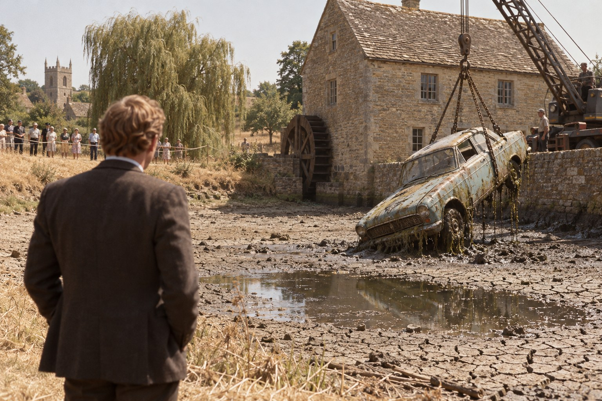

Низкая вода

Глава первая
Что было, то и будет; и что делалось, то и будет делаться, и нет ничего нового под солнцем.
— Книга Екклесиаста, 1:9
Летом тысяча девятьсот семьдесят шестого года Англия обнаружила, что солнце, о котором она веками пела в песнях и вздыхала в письмах из колоний, может светить и над ней самой, причём без перерыва и без всякой жалости. С двадцать третьего июня по восьмое июля в лондонском аэропорту Хитроу ни разу не бывало прохладнее тридцати градусов по Цельсию; третьего июля в Челтнеме термометр показал почти тридцать шесть, чего в Англии не видел никто из живущих; газоны в оксфордских колледжах, которые садовники по преданию стригли и катали триста лет, пожелтели за три недели, а в конце июля на южное побережье слетелись божьи коровки в таком числе, что энтомологическое общество, сосчитав их, назвало цифру с девятью нулями и, кажется, само испугалось. Шланги для полива запретили, ванны советовали принимать вдвоём, и некоторые англичане впервые в жизни задумались о том, откуда в кране берётся вода.
Сержант уголовной полиции Морс, которому в том году исполнилось тридцать восемь, жару переносил скверно и не скрывал этого. Он ходил на службу в пиджаке, потому что не считал возможным появляться без пиджака перед людьми, обязанными ему отвечать, снимал его в кабинете, вешал на спинку стула и весь день смотрел на него с упрёком, как на родственника, который мог бы и уехать. Пить он не пил уже пятый год. Пиво, которое в такую погоду пили все, от констеблей до членов совета колледжа, представлялось ему теперь не напитком, а доводом, и он отвечал на этот довод стаканом лимонада, всякий раз немного дольше, чем требовало приличие, разглядывая запотевший бок чужой кружки.
Конверт пришёл в субботу, семнадцатого июля, с утренней почтой. Он был плотный, длинный, из тех, в каких адвокатские конторы рассылают счета, и на обороте его стоял оттиск: «Холлис и Фенвик, стряпчие, Уитни». Стряпчими в Англии называют адвокатов, которые не выступают в суде, а составляют завещания, ведут продажу домов и знают о жизни маленького города больше, чем викарий, потому что викарию рассказывают о грехах, а стряпчему о деньгах. Мистер Лайонел Фенвик был старшим партнёром этой конторы, высоким, сутуловатым, хорошо одетым человеком пятидесяти с небольшим лет, с которым Морс пел в одном хоре и о котором знал три вещи: что у него приятный, не слишком сильный баритон, что он ездит в Байройт с пятьдесят восьмого года и что жена его Вагнера не выносит.
В конверте лежал другой конверт, поменьше, и записка, написанная крупным наклонным почерком на бланке конторы:
My dear Morse, Margaret has once again declared that four evenings of Wagner are three too many, and I had rather the seat went to someone who will not look at his watch. The ticket is in a seperate envelope; for heaven's sake don't lose it, there are people in Bayreuth who would kill for it. L. F.
В переводе это значило, что миссис Фенвик снова объявила четыре вечера Вагнера на три вечера лишними, что мистер Фенвик предпочёл бы отдать место человеку, который не будет смотреть на часы, что билет вложен в отдельный конверт и что потерять его нельзя, поскольку в Байройте есть люди, готовые за такой билет убить.
Морс прочёл записку стоя, у двери, ещё не сняв цепочку. На слове seperate он поморщился, как морщился всегда, встречая это слово с перепутанной гласной (пишется оно separate, и школьные учителя по всей Англии десятилетиями повторяли детям, что в середине у него сидит крыса, a rat, но дети вырастали и забывали крысу), и тут же простил, потому что человеку, достающему билеты в Байройт, позволено писать как угодно. Потом он вскрыл маленький конверт и некоторое время просто держал в руках узкий бледный листок с орлом и готическими буквами.
Следует объяснить, что это был за листок. Байройт, баварский городок, в котором Рихард Вагнер построил себе театр для собственных опер, каждое лето играет их на одной и той же сцене, и попасть туда простому смертному так же трудно, как в рай: заявки посылают годами, их отклоняют вежливыми письмами, и рассказывают о людях, которые ждали билета по десять лет и умерли, не дождавшись. А летом семьдесят шестого года Байройту исполнялось сто лет, и к столетию француз Патрис Шеро и дирижёр Пьер Булез ставили там заново «Кольцо нибелунга», четыре оперы на четыре вечера, о которых газеты уже писали, что одни зрители будут свистеть, а другие плакать, и что разницы между ними, возможно, не будет никакой. Морс слушал «Кольцо» с пятнадцати лет и ни разу не видел его на сцене.
Он поставил билет на каминную полку, прислонив к часам, отошёл, вернулся и переставил его так, чтобы солнце из окна не падало на бумагу, хотя никакого вреда солнце бумаге причинить не могло. Затем сел писать Фенвику благодарственное письмо, переписал его дважды, потому что в первый раз оно вышло слишком сухим, а во второй слишком тёплым, и в третьем варианте остановился на тоне, который сам про себя называл «бухгалтерским восторгом».
Сержант Морс был человеком, который многое замечал, и это следует сказать прямо, потому что дальше в этой истории ему придётся немало ошибаться. Он заметил крысу, которой не хватило в слове. Он заметил, что почерк Фенвика клонится вправо сильнее, чем полгода назад, и подумал, не болен ли тот. Не заметил он только одного: что в Байройт не поедет.
Глава вторая
В одну и ту же реку нельзя войти дважды.
— Гераклит, в пересказе Платона
Ивенлод — речка маленькая и неторопливая. Она спускается с Котсуолдских холмов, петляет между водяными лугами и каменными деревнями, огибает с севера Бленхеймский парк, где герцоги Мальборо держат оленей и дворец, и неподалёку от Кэссингтона впадает в Темзу, не оставив в истории Англии никакого следа, кроме дюжины мельниц. Одна из них, Хэддонская, стоит между Стоунсфилдом и Комбом в конце длинного просёлка; жёрнова её остановились в первую зиму войны, колесо обросло тиной, а ниже водослива остался омут, глубокий, тёмный, с такими крутыми берегами, что детей в округе поколениями пугали им так же, как цыганами.
К началу августа семьдесят шестого года пугать стало нечем. Речка стала ручьём, ручей перестал переливаться через водослив, и омут, уже ничем не пополняемый, отдавал свою воду солнцу по дюйму в день. Вокруг него обнажилась полоса серого ила, сначала липкого, потом треснувшегося на чешуйки, и в этот ил вмёрзли, как в сургуч, предметы, которые деревня тридцать лет считала потерянными: велосипедное колесо, две бутылки из-под имбирного пива с давно исчезнувшей пивоварни, детский сандалик и чайник, про который никто ничего не мог сказать. Рыба собралась в середине омута и стояла там, тесно, спина к спине, как пассажиры в последнем автобусе.
Именно рыба и привела к омуту в воскресенье, первого августа, двух мальчиков из Стоунсфилда, Терри и Кевина Райтов, десяти и двенадцати лет, с сачком и ведром. Они собирались спасать плотву или, если спасать не выйдет, хотя бы её поймать, и старший, забредши в ил по колено, упёрся рукой во что-то круглое, твёрдое и тёплое от солнца, что торчало из воды у самой стены мельницы, и было похоже на спину большой черепахи, если бы черепахи ржавели. Младший сказал, что это танк. Старший, знавший про машины больше, протёр ил ладонью, увидел край заднего стекла и за ним темноту, и побежал домой с такой скоростью, что забыл ведро. Ведро потом приобщили к делу, потому что к делу в таких случаях приобщают всё.
Деревенский констебль, человек пожилой и неторопливый, как сама речка, добрался до мельницы к четырём часам, снял ботинки и носки, закатал брюки и с достоинством, которого не ценил никто, кроме мальчиков, прошёл по илу к заднему краю того, что теперь уже никто не называл танком. Машина стояла на дне почти отвесно накренившись, носом вниз, как будто нырнула и не сумела вынырнуть, и номерная табличка над задним бампером оказалась в дюйме над водой. Констебль списал номер в блокнот, заглянул, насколько смог, сквозь стекло, отвернулся и попросил мальчиков идти домой и ведро не трогать.
Номер в понедельник утром проверили по реестру, и к десяти часам на столе у инспектора Стрейнджа лежала справка: «Форд Англия», светло-голубой, выпуска шестьдесят третьего года, владелец мисс Розалинд Эшдаун, Уитни, статус владелицы и машины — в розыске с августа шестьдесят четвёртого, розыск прекращён в сентябре того же года. Инспектором Стрейндж был с апреля. К новому кабинету он ещё не привык, к новому креслу привык сразу, а к тому, что Морс теперь заходит к нему с докладом, не привык ни тот, ни другой, и оба старались об этом не думать.
— Шестьдесят четвёртый, — сказал Стрейндж, протягивая Морсу справку. — Двенадцать лет под водой, дружище. И если там внутри то, что думает констебль, то девушка никуда не уезжала.
Морс прочёл справку дважды. В шестьдесят четвёртом году его самого в Оксфорде ещё не было: он служил тогда констеблем в Карсхолл-Ньютауне и писал рапорты о краденных велосипедах. Но он знал, кто в те годы искал пропавших в Уитни, и знал это так же точно, как свой домашний адрес.
— В шестьдесят четвёртом этим занимался… — начал он и замолчал.
— Знаю, — сказал Стрейндж и некоторое время смотрел в окно, где над крышами дрожал воздух. Имя тестя он произносил свободно и дома, и на службе, но при Морсе за четыре года отвык и теперь не стал начинать. — Папку я заказал из архива, обещали к вечеру. А сейчас поедем смотреть на неё, пока не собралась вся деревня. Кран из гаража в Вудстоке будет к двум, и де Брин уже спрашивал, нельзя ли достать её как-нибудь попрохладнее.
В машине Стрейндж опустил стекло и спросил, как бы между прочим, не едет ли Морс в этом месяце в отпуск, потому что Джоан что-то такое говорила. Морс сказал, что едет через две недели в Баварию и что заявление лежит у старшего инспектора с июня. Стрейндж кивнул, как кивают начальники, которые запомнили дату и уже считают дни, и ничего не сказал.
Глава третья
И отдало море мёртвых, бывших в нём.
— Откровение Иоанна Богослова, 20:13
Кран приехал из Вудстока в половине третьего, после того как дважды застрял в просёлке между живыми изгородями, которые в это лето тоже стали наполовину мёртвыми, и к этому времени на берегу омута собралась, как и предсказывал Стрейндж, почти вся деревня. Деревня стояла за верёвкой, которую констебль натянул между двумя ивами, пользовалась их тенью и обсуждала не столько машину, сколько то, что все эти годы купалась в омуте над ней. Над илом стоял запах, который люди, выросшие у реки, называют запахом засухи, а все остальные предпочитают никак не называть.
Доктор Макс де Брин, полицейский патологоанатом, сидел на складном стуле, который привёз с собой, под чёрным зонтом, который тоже привёз с собой, и выглядел среди соломенных шляп и маек как викторианский гробовщик, по ошибке приглашённый на пикник. Он знал Морса одиннадцать лет, дольше всех оставшихся на службе, и за эти годы выработал с ним обращение, какое вырабатывают друг с другом два старых кота в одном доме: совершенную взаимную терпимость, не исключавшую шипения.
— Если вы ждёте от меня времени смерти, сержант, — сказал он, не вставая, — то я скажу вам его с точностью до правительства. При сэре Алеке Дугласе-Хьюме или в первый год при Уилсоне. Большего ил не скажет.
Машину вытащили не сразу. Ил держал её с той жадностью, с какой держат своё только земля и наследники, трос дважды соскакивал с заднего моста, и только к четырём часам «Англия» покачиваясь поднялась над омутом, страшная, бурая, с космами водорослей на бампере и с водой, уходившей из неё сразу всеми щелями, как из решета. За верёвкой кто-то заплакал, и кто-то другой, потрезвее, стал уводить детей.
Де Брин работал сорок минут, и все сорок минут Морс стоял в трёх шагах от него, смотря чуть в сторону, как смотрел всегда: мёртвых он не выносил и за двенадцать лет службы так и не научился этого скрывать. От девушки в машине мало что осталось, и то, что осталось, сидело не за рулём, а рядом, на пассажирском месте, сползши к дверце.
— Женщина, — сказал де Брин, выпрямляясь и вытирая руки платком, который тут же выбросил в мешок. — Молодая, лет двадцати с чем-то, невысокая, пять футов два дюйма, ну, может быть, три. Зубы в хорошем состоянии, две пломбы, по ним ваш дантист, если он ещё жив и держит карточки, скажет вам имя. А здесь, — он прикоснулся карандашом к собственному затылку, — здесь у неё пролом, причём не от руля и не от панели. От руля бьются лбом. От чего-то тяжёлого, с ребром, сзади и немного сверху. Думаю, воду она уже не заметила. Это единственное утешение, которое я могу вам предложить, и оно, замечу, не для вас.
Стрейндж тем временем открыл багажник, и в багажнике оказался чемодан. Чемодан был дешёвый, из прессованного картона, и вода превратила его в подобие размокшего сухаря, но внутри можно было разобрать сложенные платья, туфли в бумажном пакете, жестяную коробочку с булавками и ночную рубашку, слишком нарядную для девушки, которая собирается ночевать одна.
— Она и вправду уезжала, — сказал Стрейндж тихо. — Собрала чемодан и уезжала. Только не доехала.
Морс не ответил. Он стоял у водительской дверцы, которую де Брин оставил открытой, и смотрел не на девушку, а на пустое водительское сиденье. Рычаг коробки передач стоял в нейтрали, ручной тормоз был отпущен до конца, фары выключены. А сиденье было отодвинуто назад до упора, на последний зубец салазки, так чтобы за рулём мог сидеть человек около шести футов ростом, не упираясь коленями в панель.
— Пять футов два дюйма, — сказал Морс. — С такого места она не достала бы ногами до педалей. За рулём была не она.
Де Брин посмотрел на него поверх очков с тем выражением, какое бывает у людей, вынужденных признать, что и другие иногда смотрят под ноги.
— И ещё, доктор, — сказал Морс, не обернувшись. — Если машина сама съехала с берега, то тот, кто её подтолкнул, вышел из неё заранее и захлопнул дверцу. Он не оставил в замке зажигания ключ.
Ключа в замке и вправду не было. Его не нашли ни в машине, ни в сумочке, ни потом, когда два констебля просеяли сквозь решётку весь ил на месте, где стояла машина, и нашли в нём только монету в три пенса шестьдесят первого года и полупереваренного рака.
Глава четвёртая
Littera scripta manet.
(Написанное остаётся.)
— Латинская поговорка
Папку привезли из архива в семь часов вечера, когда Стрейндж уже уехал домой и в участке на Касл-гейт остались дежурный сержант, жужжащий вентилятор и Морс. Папка была тонкая, гораздо тоньше, чем следовало бы ожидать от человеческой жизни, и пахла тем, чем пахнут все полицейские архивы мира: пылью, картоном и недосказанностью.
Морс разложил её на столе в порядке, в каком её собирали. Заявление о пропаже, принятое в субботу, пятнадцатого августа шестьдесят четвёртого года, от миссис Эдит Эшдаун, вдовы: дочь, Розалинд, двадцати двух лет, машинистка в конторе «Холлис и Фенвик», не вернулась домой в пятницу вечером; уехала на своей машине около восьми, сказав, что едет к подруге. Подруга её в тот вечер не видела и не ждала. Описание: рост пять футов два дюйма, волосы тёмно-русые, короткие, глаза серые; была в жёлтом платье и белом кардигане. Приложена фотография: девушка с высокими скулами и недоверчивой улыбкой, снятая у калитки на фоне шиповника, и на обороте материнским почерком: «Рос, июнь 63».
Дальше шли показания, и здесь Морс понял, что боялся не зря. Показания были напечатаны на машинке, как и положено, а поля покрывали пометки, сделанные от руки, крупно, без наклона, буквами, которые стояли на строке, как кирпичи в стене. Этот почерк Морс видел на своих рапортах семь лет подряд, чаще всего в виде одного слова на полях, и слово это было «Докажите». Он не видел его четыре года и обнаружил, что помнит каждую букву, как помнят лицо.
Показания были такие. Деннис Карвер, двадцати четырёх лет, механик гаража на Брайз-Нортон-роуд, бывший жених: помолвка расторгнута в апреле по её желанию, последний раз видел её в среду, в пятницу вечером был дома с матерью, мать подтверждает. На полях: «Врёт. Что именно — неясно». Мистер Лайонел Фенвик, младший партнёр конторы: мисс Эшдаун служила у них три года, работница образцовая, недавно говорила, что хотела бы искать место в Лондоне, в пятницу ушла из конторы в половине шестого в обычном настроении; сам он весь вечер был дома, жена подтверждает. На полях ничего. Миссис Дорин Пайк, старшая машинистка той же конторы: Рос в последние месяцы была скрытна, весела и купила новое платье, не сказав для чего; миссис Пайк думает, что у неё кто-то был. На полях: «Кто?» Оуэн Пратли, Хэддонская мельница, допрошен в порядке обхода, потому что на просёлке к мельнице были видны свежие следы шин: ночью ничего не слышал, спит крепко, на левое ухо глуховат; следы, по его словам, оставляют влюблённые из Уитни, которые ездят сюда каждую субботу. На полях: «В пятницу?»
Омут в том августе никто не осматривал. Не было причины, потому что через четыре дня пришла открытка.
Открытка лежала в целлофановом конверте в самом конце папки, настоящая, а не копия, и с лицевой стороны на Морса смотрел адмирал Нельсон со своей колонны на Трафальгарской площади, занятый, как всегда, чем-то более важным. Штемпель лондонский, Западно-Центральный округ, восемнадцатое августа. На обороте, синими чернилами, круглым аккуратным почерком, каким пишут девочки, которых в школе хвалили за чистописание:
Mum — don't worry and don't try to find me. I am going to live my own life now, seperate from all of you, with someone who loves me. I will write when I can. Ros.
«Мама, не волнуйся и не ищи меня. Теперь я буду жить своей жизнью, отдельно от вас всех, с человеком, который меня любит. Напишу, когда смогу. Рос».
Заключение графолога было подколото рядом и умещалось в одну фразу: почерк с высокой степенью вероятности принадлежит мисс Эшдаун, признаков написания под принуждением не выявлено. А под заключением, карандашом, тем же кирпичным почерком, стояло одно слово и вопросительный знак: seperate? И слово было подчёркнуто дважды.
Морс долго смотрел на эти две черты. Он понимал, что они значат, или думал, что понимает: человек, который их провёл, заметил, что машинистка сделала ошибку, какую делают половина англичан, и почему-то счёл это важным. Чего Морс не понимал, так это следующего листа, последнего в папке. Лист был датирован четвёртым сентября и состоял из трёх строк: розыск прекратить, совершеннолетняя оставила дом по собственной воле, дальнейших действий не предпринимать. Подпись: «Р. Брайт, старший суперинтендант». На полях этого листа никаких пометок не было.
Итак, человек с кирпичным почерком что-то заметил, подчеркнул дважды и потом позволил закрыть дело, не оставив ни слова возражения. Или оставил, но не здесь. Или не позволил, а закрыл сам, чужой подписью, потому что знал что-то, чего в папке нет. Морс перебрал эти варианты, и ни один ему не понравился.
В десять вечера он вышел на улицу. Жара не спала, а только потемнела, камень отдавал накопленное за день тепло, и из дверей пабов на мостовую выходили люди с кружками, потому что внутри стоять было невозможно. Морс вошёл в первый попавшийся и спросил лимонада. Бармен, одуревший от жары и числа сделанных за вечер одинаковых движений, вместо лимонада поставил перед ним пинту горького, тёмно-янтарного, с тонкой пеной и с каплями на стекле, и отвернулся к следующему.
Морс заплатил за пинту, потому что не любил исправлять чужие ошибки вслух. Он простоял над ней минуту, которая по часам над стойкой была минутой, а по всем прочим счётам гораздо дольше, потом аккуратно отодвинул кружку на дюйм от себя, как отодвигают чужую сумку, и вышел. В кружке не обсохло ни капли. Зато на стойке, где он опирался ладонью, остался мокрый след, и бармен, вытирая его, подумал, что человек в пиджаке в такую погоду сам виноват.
Глава пятая
Блаженны плачущие, ибо они утешатся.
— Евангелие от Матфея, 5:4
Зубной врач в Уитни, к которому Розалинд Эшдаун ходила с детства, давно ушёл на покой, но карточки свои хранил на чердаке в обувных коробках, потому что, как он объяснил констеблю, зубы человека переживают самого человека и кто-то должен помнить, что с ними делали. К среде де Брин сверил две пломбы, и в четверг утром инспектор Стрейндж и сержант Морс постучали в дверь небольшого дома в ряду таких же домов из жёлтого камня, в тихой улице за церковной лужайкой Уитни.
Уитни делает одеяла. Он делал их при Плантагенетах и при Тюдорах, делал для армии в обе войны и делал для спален всей империи, и в то лето семьдесят шестого года, когда одеяло стало самой ненужной вещью в Англии, всё ещё делал их, с тем молчаливым упорством, которое составляет лучшую черту английской провинции. Таким же упорством отличалась миссис Эдит Эшдаун, маленькая сухая женщина лет шестидесяти пяти, которая открыла им дверь, посмотрела на лицо Стрейнджа и сказала, прежде чем тот успел открыть рот:
— Вы её нашли. Я читала в газете про машину. Заходите, я поставлю чайник.
Она не заплакала ни тогда, ни потом, и Стрейндж, который приготовил для этого чистый платок и несколько тёплых фраз, просидел с ними в руках всю беседу. В гостиной было темно от задёрнутых штор и пахло лавандой. На камине стояла та же фотография, что и в папке, только больше, в рамке, и рядом с ней книга в тёмно-синем переплёте, поставленная так, как ставят не книги, а кубки.
— Это её приз, — сказала миссис Эшдаун, заметив, куда смотрит Морс. — За правописание. В пятьдесят седьмом году у них в грамматической школе был конкурс, и она выиграла у всех, даже у старших мальчиков, которые собирались в университет. В конце им дали слово, я до сих пор помню, «жильё», там у них две буквы «си» и две «эм», и она одна написала правильно. Она потом в конторе всем ошибки правила, и адвокатам тоже. Они смеялись и называли её «наш словарь».
Книга была сокращённым Оксфордским словарём, и на форзаце её директор школы вывел лиловыми чернилами, что она вручается Розалинд Эшдаун за первое место. Морс подержал её в руках и поставил на место, не сказав ни слова. Стрейндж смотрел на него и видел, как у него что-то щёлкнуло за глазами, но что именно, не знал, и потому стал спрашивать про пятницу.
Про пятницу миссис Эшдаун помнила всё и рассказала всё, тем же ровным голосом, каким рассказывает одно и то же человек, который двенадцать лет рассказывал это только себе. Рос пришла с работы как всегда, поужинала, переоделась в новое жёлтое платье, которое купила в Оксфорде, сказала, что едет к Джун в Картертон, и на пороге обняла мать, чего не делала с тех пор, как их отец умер в шестьдесят втором. Чемодана мать не видела; теперь она думала, что он с утра лежал в багажнике.
— Она мне за неделю до того сказала: мама, скоро всё будет по-другому. Я думала, она про новую работу. — Миссис Эшдаун разгладила на колене скатерть, которая в этом не нуждалась. — А потом пришла эта открытка, и все мне стали говорить, что она сбежала с женатым. В магазине говорили, в церкви говорили. А я им сказала: если бы моя Рос сбежала, она бы мне написала письмо на четырёх страницах, а не четыре строчки на открытке с каким-то адмиралом. Она любила писать. Вы видели открытку?
— Видел, — сказал Морс.
— Это её рука. Я и тогда не спорила. Но это не её слова. Она никогда не называла нас «вы все». Нас и было-то двое.
Стрейндж спросил про Денниса Карвера, и лицо миссис Эшдаун впервые стало неуверенным. Деннис, сказала она, любил её и до сих пор каждое Рождество присылает ей, матери, открытку без подписи, но она знает, что от него. У него теперь свой гараж, жена, двое детей. Но нрав у него был горячий, и когда Рос вернула ему кольцо, он разбил кулаком стекло в своём грузовике. И тот инспектор его подозревал.
При словах «тот инспектор» Морс поднял голову.
— Он приходил ещё раз, — сказала миссис Эшдаун, и голос её в первый раз сдвинулся, не в сторону слёз, а в сторону чего-то вроде недоумения. — В сентябре, когда мне уже написали, что розыск прекращён. Вечером, сам, в шляпе. Сел вот тут, где вы, сержант, выпил чаю. Долго молчал. Потом сказал: «Простите меня, миссис Эшдаун». И ушёл. Я так и не поняла, за что.
На обратном пути Стрейндж вёл машину молча, и Морс был ему за это благодарен. У Эйншема Стрейндж всё-таки сказал, глядя на дорогу:
— Он мог извиняться за что угодно, дружище. За то, что не нашёл. Вот и всё.
— Мог, — сказал Морс и стал смотреть на поля, где солома после ранней жатвы лежала белая, как кости, и где кое-где ещё дымились чёрные полосы от случайных пожаров.
Глава шестая
Нет ничего обманчивее очевидного факта.
— Артур Конан Дойл, «Тайна Боскомбской долины»
Гараж Денниса Карвера стоял на Бёрфорд-роуд, на западной окраине Уитни, и состоял из двух бензоколонок, мастерской с открытыми воротами, из которых тянуло жаром, как из печи, и вывески, на которой слово «Ремонт» было написано без ошибок, что Морс отметил с невольным уважением. Хозяин лежал на спине под рыжим «Воксхоллом», и долгое время из него были видны только ботинки, которые не шевельнулись даже тогда, когда Стрейндж назвал его по имени.
— Я знал, что вы придёте, — сказали ботинки. — Как прочёл про машину, так и знал. Двенадцать лет прошло, а вы опять ко мне. Не к её фертикам из конторы, а ко мне.
Он выкатился из-под машины на тележке и поднялся. Это был коренастый человек лет тридцати семи, невысокий, круглоголовый, с руками, которые казались слишком большими для него, и с белым шрамом поперёк костяшек правого кулака, таким, какие остаются от разбитого стекла. Морс посмотрел на шрам, потом на лицо, и Карвер заметил оба взгляда и сунул руку в карман комбинезона.
Разговор вёл Стрейндж, и вёл его хорошо, с той спокойной доброжелательностью, которая давалась ему без труда и которой Морс завидовал, не сознаваясь в этом даже себе. Да, у Карвера был ключ от её машины: он сам помог ей её выбрать и сам её чинил, когда они ещё были помолвлены. Нет, ключа у него больше нет: он выбросил его в апреле, вместе с кольцом, которое она вернула, в Уиндраш с моста. Нет, в ту пятницу он её не видел. Он был дома, с матерью, мать тогда же сказала. Мать умерла три года назад, если инспектор хочет её переспросить.
— Вы её любили, — сказал Стрейндж.
— Любил, — сказал Карвер и сплюнул в сторону колонки, аккуратно, чтобы ни в кого не попасть. — А она нашла себе получше. Тогда все так говорили. Женатого, с деньгами. Ходила в новом, нос кверху. На меня в том своём жёлтом и не глянула бы.
Стрейндж не пошевелился. Морс, стоявший до этого у ворот, сделал два шага вперёд.
— В каком жёлтом, мистер Карвер?
— В платье. У неё было жёлтое платье.
— У неё было жёлтое платье, которое она купила в Оксфорде в ту самую неделю, — сказал Морс, — и надела его в первый раз в пятницу вечером. До этого оно висело в шкафу в бумаге. Так утверждает её мать, и я ей верю. Вы видели её в пятницу.
На это наступило молчание, настолько полное, что было слышно, как в рыжем «Воксхолле» остывает металл. Карвер смотрел на Морса снизу вверх, и в лице его была не вина и не страх, а та застарелая, двенадцатилетняя ненависть к людям в пиджаках, которая слишком давно живёт в человеке, чтобы помнить, откуда взялась.
— Больше я вам ничего не скажу, — сказал он. — Тогда не сказал и сейчас не скажу. Хотите забрать — забирайте, только дайте сначала жене позвонить.
Забирать его Стрейндж не стал, и Морс всю дорогу до Оксфорда строил версию, а Стрейндж её слушал. Версия была красивая, как все версии Морса, и состояла из следующего. Карвер видел Рос в пятницу и соврал об этом, тогда и сейчас. Карвер ревновал и был скор на руку, чему есть свидетель, белый и длинный. Карвер был механиком, имел или мог иметь ключ и знал эту машину лучше, чем сама Рос. Карвер вырос в Уитни и наверняка знал омут у Хэддонской мельницы, куда, со слов мельника, ездила по субботам влюблённая молодёжь из Уитни. Он перехватил её по дороге к тому, к кому она ехала, и там, на обочине, между ними произошло то, что произошло.
— А сиденье? — спросил Стрейндж. — Он, дружище, дай бог пять футов семь.
И тут Морс сделал то, что делал всегда, когда факт не входил в версию: он сделал из него украшение. Именно потому, что Карвер мал ростом, сказал он, и именно потому, что он механик и знает, на что смотрят при осмотре машины, он отодвинул сиденье до упора, чтобы искали высокого. Всё сходилось, и Морс с удовольствием слушал, как оно сходится, не замечая, что сходится оно только в той части рассуждения, которую он достроил сам.
Стрейндж сказал, что подумает. Он всегда так говорил, когда уже подумал.
Глава седьмая
Строить теории, не имея данных, — грубейшая ошибка.
— Артур Конан Дойл, «Скандал в Богемии»
Инспектор Стрейндж разобрал версию своего сержанта на следующее утро, в пятницу, между второй и третьей чашкой чая, и сделал это так мягко, что Морс ещё несколько минут не понимал, что от неё остались одни обломки.
— У меня только одна закавыка, дружище, — сказал Стрейндж. — Вот он стоит ночью у омута, наш Карвер. Машина сейчас уйдёт под воду, на двенадцать футов, и никто её больше не увидит. Так он, по крайней мере, думает, и думает правильно, потому что никто не увидел двенадцать лет. И он лезет в машину отодвигать сиденье, чтобы обмануть полицейских, которые её никогда не найдут. Для кого он старается? Для раков?
Морс открыл рот, чтобы сказать, что убийца мог предусмотреть засуху, услышал, как это звучит, и закрыл. Стрейндж деликатно не заметил ни того, ни другого.
А в четыре часа дня в участок на Касл-гейт пришёл Деннис Карвер, в чистой рубашке и с женой, которая осталась сидеть в коридоре с прямой спиной и сумкой на коленях, как сидят на вокзале, и рассказал то, чего не рассказал в шестьдесят четвёртом. Рассказывал он Стрейнджу и ни разу не посмотрел на Морса.
В ту пятницу он взял без спросу грузовик своего тогдашнего хозяина и поехал за ней. Он делал так и раньше, в июле, два или три раза, но всякий раз терял её в городе. В эту пятницу не потерял. Она не поехала в Картертон, а свернула на дорогу к Вудстоку и за Норт-Ли остановилась на обочине, где уже стояла другая машина, большая, тёмная, «Ровер». Карвер проехал мимо, не сбавляя хода, и в зеркало увидел, как она вышла из своей машины и села в ту, и как из той вышел человек, чтобы открыть ей дверцу, высокий, в светлом плаще, хотя дождя не было. Лица он не разглядел. Номера тоже. Он доехал до паба в Норт-Ли, пропил там все деньги, что были при нём, и на обратном пути помял хозяйский грузовик о столб, и хозяин насчитал ему за крыло и выгнал, но в полицию не заявил. А когда через два дня пришёл инспектор и стал спрашивать, где он был в пятницу, Карвер понял, что, если скажет правду, из неё выйдет ровно то, что сегодня утром и вышло у сержанта Морса, и попросил мать сказать, что он был дома.
— А потом пришла эта открытка, — сказал Карвер, — и я решил, что она с ним и уехала. С этим, в плаще. И двенадцать лет думал, что она где-то живёт. Считайте как хотите. Я ей завидовал.
Когда Карверы ушли, и жена взяла мужа под руку, как берут под руку больных, Стрейндж некоторое время сидел молча, а потом сказал, что Джоан ждёт Морса сегодня к ужину и что отказа она не примет, потому что уже купила лосося.
У Стрейнджей был дом в Кидлингтоне с садиком, и садик этот в августе семьдесят шестого года выглядел так, как выглядели все садики Англии, то есть как двор испанского монастыря: жёлтая трава, поникшие розы и одно упрямое деревце, которое Джоан поливала по вечерам из таза после мытья посуды, с видом человека, нарушающего закон. На столе в саду лежала газета, и в газете кто-то из водопроводных начальников советовал гражданам класть в бачок унитаза кирпич.
Джоан было около тридцати, и она была похожа на отца тем, чем дочери бывают похожи на отцов и что не видно на фотографиях: манером слушать, слегка наклонив голову, и способом задавать вопрос так, чтобы человек сначала ответил, а потом уже подумал, стоило ли. Морс обещал её отцу за ней присматривать, и четыре года присматривал, что на практике означало ужин раз в месяц и неловкий подарок на Рождество, который Джоан всякий раз хвалила сильнее, чем он того заслуживал.
— Джим говорит, вы едете в Байройт, — сказала она, наливая ему лимонаду и себе лимонаду тоже, хотя на столе стояло вино. — Папа когда-то сказал, что вы когда-нибудь туда поедете и вернётесь совершенно невыносимым.
Морс сказал, что невыносим и без Байройта, и Джоан засмеялась. Потом, когда Стрейндж ушёл в дом за штопором, она сказала, глядя не на Морса, а на деревце:
— Джим сказал, это дело было папино. Я тогда была девчонкой, но я помню ту осень. Мама сердилась, что он по воскресеньям куда-то уезжает на машине и не говорит куда. В сторону Уитни, она знала по счётчику. Всю осень, до самого Рождества. А потом перестал. Я не знаю, зачем я вам это рассказываю. Наверное, потому, что вы теперь будете думать об этом деле, а я не хочу, чтобы вы думали про него один.
Морс ничего не ответил, потому что не знал, что на это отвечают. Воскресные поездки к Уитни могли означать, что человек продолжал искать, когда искать ему запретили. Могли означать и другое: что человек ездил к кому-то, с кем ему нужно было договориться. Сержант Морс не был человеком, склонным к дурным мыслям о тех, кого любил. Он был человеком, склонным к любым мыслям, если они логичны, и эта черта, чрезвычайно полезная в его работе, в жизни доставляла ему немало неудобств.
Лосось был хорош, и Морс сказал об этом трижды.
Глава восьмая
Уста льстивые готовят падение.
— Книга притчей Соломоновых, 26:28
Контора «Холлис и Фенвик» занимала два этажа георгианского дома на Рыночной площади Уитни, с полированной медной табличкой у двери, которую кто-то тёр каждое утро уже так долго, что буквы на ней стали мягкими, как на старой монете. Внутри было прохладно, как бывает прохладно только в старых домах с толстыми стенами и в церквях, пахло сургучом, воском и слегка лентой пишущей машинки, и из-за приоткрытой двери в конце коридора доносился ровный сухой стук, как дождь по жестяной крыше, единственный дождь, который Уитни слышал с июня.
Мистер Лайонел Фенвик вышел им навстречу сам, не дожидаясь, пока о них доложат, и протянул Морсу обе руки.
— Вы! — сказал он. — Нет, каково! Я прочёл в газете, что нашли бедную Рос, и подумал: вот сейчас ко мне придут какие-нибудь молодые люди с блокнотами, и придётся всё рассказывать сначала. А пришли вы. Инспектор, рад знакомству. Садитесь, господа, садитесь, сейчас принесут чай.
Он был высок, как и помнил Морс, высок и сутул той сутулостью, которая появляется у высоких людей от тридцати лет вежливых поклонов клиентам ниже ростом, с длинным умным лицом и седыми висками, в костюме из светлого льна, который в такую жару мог себе позволить только человек, уверенный в своём положении, и в галстуке колледжа, который Морс узнал и предпочёл не узнавать. Разговаривая, он слегка наклонялся к собеседнику, как наклоняются к фортепиано, и голос у него был тот самый приятный, не слишком сильный баритон, который Морс слышал рядом с собой на репетициях три сезона подряд.
О Розалинд Эшдаун он говорил с нежностью, с какой говорят о старой пишущей машинке, которая никогда не ломалась. Лучшая машинистка, какая у них была. Правила орфографию всей конторе, и старик Холлис, его тесть, тогда ещё старший партнёр, звал её «наш словарь». Нет, о личной жизни её он ничего не знал, что же делать, такие вещи обсуждают машинистки между собой, а не с партнёрами. Он тогда же всё рассказал инспектору, который вёл дело, очень серьёзному человеку, как же его звали…
— Неважно, — сказал Морс.
А «Ровер»? Фенвик слегка приподнял брови, услышав вопрос, как воспитанный человек приподнимает брови, услышав неожиданную фальшивую ноту, и ответил не сразу. Да, у фирмы в те годы был «Ровер», тёмно-синий, один на всю контору. На нём ездил старик Холлис, потому что считал, что старший партнёр должен подъезжать к суду в машине, достойной суда. Иногда брал и сам Фенвик, когда ездил по делам. В тот вечер? Бог с вами, сержант, двенадцать лет. Но в тот вечер он, как и сказал тогда, был дома с женой, а где был тесть, спрашивать уже не у кого: старик с семидесятого года на покое, живёт в доме престарелых в Бёрфорде и не всегда помнит, какой нынче год.
— А жаль, — добавил Фенвик, — вы бы его оценили, инспектор. Мировой судья сорок лет, староста церкви, председатель чего только нет. Он, если не ошибаюсь, играл в гольф с вашим тогдашним главным констеблем. Играл скверно, замечу, но играл.
Морс записал это, и Стрейндж заметил, как он это записал.
Чай принесла не девочка-секретарша, а пожилая женщина в серой кофте поверх блузки, несмотря на жару, с карандашом за ухом и лицом человека, который сорок лет слышит чужие разговоры и печатает их без ошибок. Фенвик представил её как миссис Пайк, старшую машинистку, сердце и совесть конторы.
Миссис Пайк поставила поднос и несколько секунд смотрела на Морса так, как смотрят на новый документ, прежде чем решить, что с ним делать.
— Она была лучшая из нас, — сказала она. — Я тогда ещё сказала инспектору, что у неё кто-то был. Только он, по-моему, и без меня это знал. Он спросил меня кто, а я…
— А миссис Пайк, разумеется, не знала, — мягко сказал Фенвик, и миссис Пайк кивнула, соглашаясь с тем, что она не знала, и вышла, прикрыв за собой дверь неслышно и плотно.
Прощаясь у двери, Фенвик задержал руку Морса в своей.
— Через неделю в Байройте, — сказал он вполголоса, как говорят о вещах более важных, чем убийство. — Говорят, на премьере свистели так, что Булез не слышал оркестра. Надеюсь, служба вас отпустит. Вы ведь всё здесь узнаете за неделю, правда?
Инспектор Стрейндж посмотрел на своего сержанта, и сержант покраснел, как не краснел с недавних пор, когда его имя прочли вслух в участке. В машине Стрейндж спросил только одно: за какие заслуги стряпчий из Уитни дарит полицейским сержантам билеты, за которые в Баварии, как он слышал, готовы убить. Морс ответил, что за заслуги перед вторыми тенорами области, и Стрейндж сказал, что так и запишет.
Глава девятая
Украденные воды сладки, и утаённый хлеб приятен.
— Книга притчей Соломоновых, 9:17
Оуэн Пратли жил в доме мельника, прилепившемся к стене мельницы, как ласточкино гнездо, и жил один, если не считать поджарого серого пса неопределённой породы с длинными ногами и глазами старого картёжника. Таких собак в Англии зовут ларчерами, помесью борзой с чем придётся, и держат их люди, которым нужна собака быстрая, тихая и не слишком разборчивая в вопросах собственности. Самому Пратли было лет семьдесят, и он походил на обрубок ивы: низкий, узловатый, в середине, вероятно, пустой и неистребимый.
Морс приехал к нему один во вторник, десятого августа, потому что Стрейнджа в тот день отдали газетчикам. Дело о девушке в омуте за неделю добралось до лондонских газет, которые в то лето писали про жару, про жару и про жару и обрадовались всякому поводу написать про что-нибудь другое, если это другое нашлось благодаря жаре. Одна из них уже назвала Розалинд Эшдаун «девушкой, которую вернула засуха», и Морс, прочитав это, почувствовал к автору такую неприязнь, какой не чувствовал к Карверу.
Мельник встретил его у калитки и в дом не пригласил. Ничего он тогда не слышал, ничего не слышит и сейчас, на левое ухо он глуховат с войны, и тому инспектору он так и сказал. Спит крепко. Омут глубокий, в нормальное лето там двенадцать футов, и что там на дне, один бог знает, а бог, как известно, не рассказывает. Следы шин на просёлке оставляют влюблённые из Уитни, по субботам, тогда оставляли и теперь оставляют, если сержанту интересно.
Сержанту было интересно другое. Разговаривая, Морс стоял так, чтобы солнце было у него за спиной, а левое ухо мельника обращено к просёлку, и когда далеко в просёлке, за поворотом, хрустнул гравий под чьим-то велосипедом, Пратли повернул голову раньше собаки. Собака тоже повернула, но собака не утверждала, что глуховата.
И ещё одно. На вбитых в стену сарая крючьях, на виду у всякого, кто захотел бы смотреть, висела длинная сеть с мелкой ячеёй, слишком длинная для речки, в которую сейчас с трудом пролезла бы утка, и такие сети Морс, выросший в городе, видел прежде только однажды, в комнате вещественных доказательств в Карсхолле. На них брали не рыбу. А в сарае, в тени, стоял «Ленд-Ровер» первой серии, давно неновый, но ухоженный, и на его ветровом стекле в углу, выцветший до цвета слабого чая, висел старый бумажный кружок дорожного налога, который кто-то, по странной деревенской привычке, не снял, когда наклеил новый. На старом кружке ещё читалась дата: октябрь шестьдесят четвёртого.
— Хорошая машина, — сказал Морс. — Дорогая, наверное, для мельника, у которого мельница стоит с сорокового года. Вы купили её осенью шестьдесят четвёртого, мистер Пратли. Через два месяца после того, как сказали инспектору, что ничего не слышали.
Пратли посмотрел на него так, как смотрит на городского человека деревня, которая не ожидала от него ничего, кроме глупостей, и наткнулась на что-то другое. Он ничего не ответил. Он свистнул собаке, вошёл в дом и закрыл дверь, и на повторный стук не отозвался, что с его стороны было нелогично, потому что теперь он мог бы сослаться на глухоту.
На обратном пути Морс остановил машину у омута и постоял на берегу. После того как машину увезли, от омута осталась тёмная лужа между серыми берегами, и в середине лужи стояла рыба, так же тесно, как неделю назад, только её стало меньше. Старик, готовый потерять слух ради полиции, ларчер и сеть для дичи. «Ленд-Ровер», купленный через два месяца после той пятницы на деньги, которых у него быть не могло. Морс стоял на жаре с непокрытой головой и чувствовал, как в нём собирается новая версия, сама собой, из этих четырёх кусков, как собирается кристалл в насыщенном растворе. Старик сам всё видел и взял за это деньги. Или старик сам всё и сделал.
Версия была не хуже предыдущей, и к вечеру Морс уже верил в неё настолько, что выпросил у Стрейнджа ордер на обыск в доме мельника. Стрейндж выслушал, вздохнул и подписал, потому что инспектору тоже иногда нужно начинать какую-нибудь версию, не дожидаясь, пока сержант придумает лучшую.
Глава десятая
Скрывающий свои преступления не будет иметь успеха.
— Книга притчей Соломоновых, 28:13
Обыск в доме мельника провели в среду утром, и он дал ровно то, чего Морс хотел, и ровно то, чего он не хотел, в одной и той же жестяной коробке из-под печенья, засунутой на полку над печью. В коробке лежали две вещи. Первая — сложенная вчетверо вырезка из «Оксфорд мэйл» за август шестьдесят четвёртого с фотографией Розалинд Эшдаун у калитки и заголовком «Пропала машинистка из Уитни», затёртая на сгибах так, как стираются бумаги, которые часто разворачивают. Вторая — тонкая тетрадь в клеёнку, исписанная карандашом: даты, цифры, и напротив каждой строки одна и та же буква «Д» и название лавки дичи на Крытом рынке в Оксфорде.
Буква «Д» означала «дое», то есть по-английски олениху, и когда Пратли понял, что тетрадь прочитана, он сел на стул у холодной печи и стал выглядеть на свои семьдесят лет, чего до сих пор себе не позволял. Олени были герцогские. Бленхеймский парк обнесён каменной стеной в девять миль, и в стене этой была одна осыпь, про которую знали только Пратли, его отец и дед, и зимой шестьдесят четвёртого года через эту осыпь ушло столько герцогской оленины, что хватило на «Ленд-Ровер». Деньги ему никто не платил, кроме торговца дичью. Местный констебль, присутствовавший при обыске, сделал вид, что читает объявление на стене, и сделал его неубедительно.
— А вырезка? — спросил Стрейндж, садясь напротив.
И тогда Пратли рассказал.
В ночь с пятницы на субботу он возвращался от осыпи в стене, неся на плечах молодую лань, и было это в час ночи или немного позже, потому что часы в Стоунсфилде пробили один раз, когда он вышел на просёлок. И на просёлке его нагнала машина без фар, маленькая, шила медленно, на первой передаче, и он едва успел свалиться со своей ношей в канаву под живую изгородь. Машина спустилась к мельнице. Потом мотор затих, и затих надолго, минут на десять, а потом был звук.
— Такой, — сказал Пратли, — как будто корова свалилась с берега. Только корова потом бьётся, а тут ничего. Булькало немного. И всё.
А ещё через пять минут по просёлку вверх, от мельницы к дороге на Норт-Ли, прошёл человек. Прошёл в двух шагах от канавы, так что Пратли, лежавший лицом в крапиве с чужой ланью на спине, слышал, как он дышит. Высокий. В светлом плаще, потому что светлое ночью видно, а лица нет. В перчатках, в августе, светлых тоже. Шёл быстро, но не бегом, как идут люди, которые опаздывают и не хотят, чтобы это было заметно.
— Я вылез из канавы, когда всё стихло, — сказал Пратли. — Утащил лань в сарай. Утром сходил к омуту — ничего. Вода как вода. А вечером прочёл про девушку. И что мне было инспектору говорить? Что я в час ночи лежал в канаве с герцогской ланью? И потом, на четвёртый день, написали, что она живая и уехала в Лондон. Я и поверил. То есть я себе сказал, что поверил. Двенадцать лет в этом омуте не купался. Один во всей деревне.
Он помолчал и добавил, не глядя на них:
— А вырезку я потому держал, чтобы не забыть, как она выглядит. Вы такого не поймёте.
Морс, вопреки ожиданию старика, понял. Он стоял у окна, из которого был виден омут, и думал о том, что за один день он второй раз построил версию на человеке, чей грех был в том, что он ничего не сказал, и оба раза люди эти молчали не из-за Рос, а из-за собственных мелких преступлений, чужого грузовика и чужой лани, и оба раза описали одного и того же человека: высокого, в светлом плаще, без лица. Человека, который оставил свой «Ровер» на обочине за Норт-Ли, отвёз девушку в её же машине к омуту и вернулся к своему «Роверу» пешком, три мили просёлками, в перчатках.
— У фирмы был тёмно-синий «Ровер», — сказал Морс, не оборачиваясь. — И ездил на нём старший партнёр.
Стрейндж ничего не ответил. Он смотрел на спину Морса с тем выражением, с каким смотрят на человека, который стоит на краю обрыва и говорит, что оттуда отличный вид.
Глава одиннадцатая
Не судите, да не судимы будете.
— Евангелие от Матфея, 7:1
Новая версия сержанта Морса была хуже двух предыдущих во всех отношениях, кроме одного: она объясняла всё. И именно потому, что она объясняла всё, Морс изложил её Стрейнджу не в участке, а вечером в машине на стоянке у Порт-Мидоу, где их никто не слышал, кроме двух лошадей и стада гусей, изнывавших от жажды на огромном буром лугу, где в иные годы в августе стояли лужи.
Версия была такая. Тёмно-синий «Ровер» принадлежал фирме, и водил его старый Холлис. Старый Холлис был высок, это знали все в Уитни, и в шестьдесят четвёртом был ещё крепок, а крепкие старики влюбляются в машинисток не реже молодых и с тем же успехом. Старый Холлис был мировым судьёй, старостой церкви и партнёром главного констебля по гольфу, и для такого человека настойчивая машинистка была катастрофой, а исчезнувшая машинистка неприятностью, которую можно уладить. Инспектор, ведший дело, что-то заметил и подчеркнул дважды. Дело закрыли сверху, подписью старшего суперинтенданта, без единого слова на полях. Инспектор после этого пришёл к матери девушки и попросил прощения. И всю осень по воскресеньям ездил в сторону Уитни, никому не говоря куда.
Имени инспектора Морс не назвал ни разу. Он говорил «инспектор», как говорил бы о любом другом инспекторе, и чем тщательнее он это делал, тем яснее было, о ком идёт речь.
Стрейндж слушал, глядя сквозь ветровое стекло на лошадей, а когда Морс закончил, сказал очень спокойно, тем голосом, каким говорил только дважды за все годы их знакомства:
— Ты говоришь об отце моей жены, дружище.
— Я говорю о папке.
— Ты говоришь о человеке, у которого ты учился семь лет и который ради тебя… — Стрейндж не договорил, потому что то, что тот сделал ради Морса, было их общим делом и вслух не произносилось. — Ладно. Хорошо. Едем завтра к Холлису. Но если ты там скажешь хоть слово про того инспектора, я выведу тебя из комнаты. И не посмотрю, что ты старше меня.
Дом престарелых в Бёрфорде стоял на склоне холма, по которому этот каменный городок спускается к Уиндрашу, и в комнате мистера Амброуза Холлиса пахло лавандой и лекарствами. Сам он сидел в кресле у окна, очень длинный даже сидя, в галстуке и с пледом на коленях, хотя за окном было тридцать градусов, и смотрел на посетителей с вежливым любопытством человека, который не уверен, на какое дело их назначил.
Про Розалинд Эшдаун он вспомнил сразу и оживился. Наш словарь. Однажды она поправила его при клиенте, при леди как-бишь, и он на следующий день прибавил ей жалованья, потому что люди, которые не боятся поправить старшего партнёра, в конторе на вес золота. Не все, впрочем, так считали. Кое-кто сердился. Кто сердился, он не помнил. «Ровер»? «Ровер» был его, и никто его не водил, кроме него самого, ну и дочериного мужа, когда тот ездил по делам, а по делам дочерин муж ездил всё время, такая у него была работа. А в августе шестьдесят четвёртого он, Амброуз Холлис, был… Здесь он замолчал, и взгляд его ушёл куда-то за окно, в сторону лет, где все августы одинаковы, и не вернулся.
Стрейндж сказал на улице, что слышал достаточно. Морс сказал, что тоже, и оба имели в виду разное. Стрейндж слышал дряхлого старика, который не помнит, какой нынче год. Морс слышал высокого человека, который никому не давал свой «Ровер» и помнил всё до самого августа шестьдесят четвёртого, а на августе замолчал. О дочерином муже, который всё время ездил по делам, не подумал ни тот, ни другой, и рассказчик не берётся их за это судить: в комнате, где дремлет старый судья, трудно услышать что-либо, кроме собственной версии.
Вечером Морс достал из ящика стола конверт со штемпелем сассекского городка, пришедший два года назад, и переписал с него адрес. Потом позвонил Стрейнджу домой и сказал, что завтра едет к человеку, который подписал последний лист в папке, и спросит его почему. Стрейндж долго молчал в трубку, и было слышно, как в глубине дома Джоан моет посуду, экономно, в тазу.
— Поезжай, — сказал наконец Стрейндж. — Только спроси его так, дружище, чтобы потом можно было смотреть Джоан в глаза.
Глава двенадцатая
Бездна бездну призывает голосом водопадов Твоих.
— Псалом 41:8
На сассекском берегу было на пять градусов прохладнее, чем в Оксфорде, и от этого на берег съехалась половина Англии. Морс протискивал свой «Ягуар» сквозь городок между автобусами, детьми и старухами в соломенных шляпах и нашёл нужную улицу только к трём часам, а нужный дом сразу: он был единственным на улице, где лужайка перед крыльцом была подстрижена ровно, как плац, несмотря на то, что стричь было уже нечего.
Реджинальд Брайт, бывший старший суперинтендант, открыл дверь сам, и в первую секунду Морс его не узнал, а во вторую узнал и пожалел о первой. Брайт стал меньше. Он держался так же прямо, как на утренних инструктажах в участке, и на нём были галстук и вязаный жилет, но жилет был ему велик, и галстук был завязан чуть иначе, чем раньше, как завязывают люди, которым долго завязывал галстук кто-то другой.
— Морс, — сказал он так, будто Морс опоздал на десять минут, а не на два года. — Входите. Я поставлю чайник.
В гостиной с окном на море всё стояло на своих местах, и всё было чуть не так, как бывает в домах, где двое жили сорок лет, а один живёт четыре года: на камине стояли фотографии, и с них была стёрта пыль, а с камина вокруг них нет. На столе лежала раскрытая книга и рядом с ней очки, версия о золотом пенсионном досуге, в которую Морс не поверил, потому что книга была раскрыта на странице с оглавлением.
Они говорили сначала о жаре, потом о саде, который Брайт поливал из ванны ведром, потом о Стрейндже, и Брайт сказал, что всегда считал сержанта Стрейнджа человеком, который пойдёт далеко, и сказал это без всякого укора в адрес Морса, и от этого было только хуже. Потом Брайт сказал:
— В вашем письме была точка с запятой. Я оценил. Нынче её не ставит никто. — И, не меняя тона: — Вы приехали насчёт мисс Эшдаун. Я читаю газеты, Морс, пусть и с опозданием.
Морс спросил. Он не помнил потом, какими словами, помнил только, что спросил не так, как собирался, потому что собирался он спросить суперинтенданта, а перед ним сидел старик в великом жилете. Но спросил он всё: про Холлиса и гольф, про подчёркнутое дважды слово и пустые поля последнего листа.
Брайт долго смотрел в окно, где море, неправдоподобно синее для Англии, лежало совсем спокойно, как лежат на картинах.
— Холлиса я видел однажды в жизни, на каком-то обеде, и не запомнил, — сказал он наконец. — Главный констебль мне не звонил. Никто мне не звонил, Морс. Это было бы проще. Дело было так. — И дальше Брайт произнёс имя так же просто, как произносил его семь лет каждое утро, а Морс услышал его впервые за четыре года. — В конце августа Фред пришёл ко мне с открыткой и положил её мне на стол. Он сказал: эта девушка выиграла конкурс по правописанию, сэр, она исправляла ошибки адвокатам. Она не могла написать это слово так. Она переписала чужой текст. Дайте мне месяц, и я найду руку, которая его написала.
Брайт помолчал.
— У меня было сорок открытых дел, — сказал он. — У меня были два пропавших ребёнка, воровство на заводе в Каули и начальство, которое считало моих людей по головам. И у меня была взрослая женщина, которая собственной рукой, что подтвердил графолог, написала матери, чтобы её не искали. Я сказал ему, что орфография не улика. Что влюблённые девушки делают ошибки и посерьёзнее. Он попросил не закрывать. Я закрыл. Поля пустые, потому что он не стал писать на моём распоряжении. Он был воспитанный человек.
— А воскресенья? — спросил Морс чужим голосом.
— Я знал про воскресенья. Он мне не докладывал, я не спрашивал. Он сидел в машине на Рыночной площади в Уитни и смотрел, кто выходит из церкви. Он думал, что человек, сделавший такое, не сможет не ходить в церковь. Он ошибался, такие люди весьма редко что-нибудь не могут. В декабре его жена попросила меня поговорить с ним, и я поговорил. Это тоже был я, Морс, если вы собираете полный список.
Морс не собирал списка. Он сидел и чувствовал, как из него выходит что-то, что сидело в нём с вечера, когда он впервые увидел две черты под словом, и что на его месте остаётся стыд, не такой тяжёлый, но заслуженный им целиком. Он приехал сюда с мыслью, что человек с кирпичным почерком мог сдаться, и всю дорогу ненавидел себя за эту мысль и всё равно ехал.
Брайт, кажется, понял и это, потому что сказал вдруг, не поворачиваясь от окна:
— Когда я возвращался домой, жена всегда спрашивала: ну что, Реджинальд, всех нашли? Я отвечал: почти. Сорок лет отвечал «почти». Её нет четыре года, а я всё ещё так отвечаю. В пустой кухне. — Он помолчал. — Мисс Эшдаун была из «почти».
Морс ждал следующей фразы. Он знал, какой она может быть, и знал, что каждое её слово будет справедливым, потому что людей, из-за которых миссис Брайт не дожила до этого лета, в дом привёл он. Следующей фразы не было. Брайт поднялся, достал из буфета графин и два стакана, налил себе на палец виски и поднял графин над вторым стаканом.
— Нет, спасибо, сэр, — сказал Морс, и это «сэр» вышло у него само, как выходило семь лет.
— Правильно, — сказал Брайт и поставил графин на место.
Провожая его до машины, он остановился у калитки и сказал ещё одно, тотчас, будто вспомнил пункт в повестке дня, который пропустили:
— Он сказал мне тогда ещё одну вещь, Морс, и я её не забыл, хотя старался. Он сказал: тот, кто написал это слово, не знал, что пишет его неправильно. Значит, он пишет его так всегда. И где-то лежит другая бумага с той же ошибкой. И если она найдётся, то не потому, что её искали, а потому, что он сам её кому-нибудь пришлёт. — Брайт протянул руку. — Приезжайте ещё. Без дела.
Дорога на Оксфорд заняла четыре часа, и все четыре часа Морс ехал с выключенным радио.
Глава тринадцатая
Что я написал, то написал.
— Евангелие от Иоанна, 19:22
Суббота, четырнадцатое августа, приходилась ровно на двенадцатую годовщину той пятницы, и Морс, который не верил в знаки, заметил это с утра и весь день старался не думать об этом, что и есть самая распространённая форма веры в знаки. Он поехал в Уитни без Стрейнджа, потому что по субботам инспектор Стрейндж подстригал изгородь, если только не случалось убийства свежее двенадцатилетнего, и потому ещё, что не знал, зачем едет, и не хотел этого объяснять.
Миссис Дорин Пайк жила в маленьком доме на окраине с садиком, где всё, что могло засохнуть, засохло, а всё, что могло выжить, стояло в кадках у кухонной двери, поближе к тазу с посудной водой. Она не удивилась ему. Она сказала, что так и думала, что он придёт, и придёт один, потому что в конторе он смотрел на неё так, как смотрят люди, у которых есть вопрос, а не спрашивают на людях.
И вопрос у Морса был один: что она собиралась сказать в кабинете Фенвика, когда Фенвик сказал за неё, что она не знала.
Миссис Пайк долго сидела молча, сложив руки на коленях, и Морс видел, что пальцы у неё чуть двигаются, как двигаются пальцы у машинисток и пианистов, когда они думают.
— Я не знала, — сказала она наконец. — Это правда, сержант. Я и сейчас не знаю. Я могу вам сказать только одну вещь, и я двенадцать лет никому её не говорила, потому что не знала, что она значит. Рос правила всем. Мне правила, и я не обижалась. Мистеру Холлису правила при клиентах, и он смеялся. А мистеру Фенвику никогда. Он пишет с ошибками, сержант, он всегда писал с ошибками, немного, в одних и тех же словах, как многие умные люди, и мы всегда потихоньку правили его черновики, когда перепечатывали, и он никогда не замечал. А она не правила. В последний год перестала. Печатала его черновики слово в слово, как есть, со всеми его ошибками, и потом я вылавливала их из её листов сама. Я спросила её однажды. Она сказала: мистер Фенвик не любит, когда его поправляют. И покраснела. Я тогда подумала, что она его боится.
Она посмотрела на Морса тем же долгим взглядом, каким смотрела в конторе, и добавила:
— А теперь я думаю, что боятся не так. Так не боятся, сержант. Так берегут.
Морс поблагодарил её и вышел, и сел в машину, и некоторое время сидел в ней, раскалённой, как печь, не заводя мотора. Он не думал. Он, если говорить точно, изо всех сил не думал, как не смотрят на что-то, что уже увидели краем глаза. Потом он поехал домой, и дорога мимо Эйншема показалась ему самой длинной дорогой в Англии.
Билет стоял на каминной полке, прислонённый к часам, там, где солнце из окна на него не падало. Записка лежала рядом, сложенная вчетверо. Морс развернул её, хотя помнил её наизусть, потому что помнить и видеть не одно и то же, и полицейский отличается от полицейского именно тем, насколько хорошо он это знает.
The ticket is in a seperate envelope.
Крупным наклонным почерком, на бланке конторы, без крысы в середине.
Тот, кто написал это слово, не знал, что пишет его неправильно. Значит, он пишет его так всегда. И если другая бумага найдётся, то не потому, что её искали, а потому, что он сам её кому-нибудь пришлёт.
Он прислал. Четыре недели назад, в субботу, с утренней почтой, вместе с самым дорогим подарком, какой когда-либо получал сержант Морс, прислал тому единственному человеку в Англии, который через три недели будет держать в руках открытку с адмиралом Нельсоном. Рассказчик не берётся судить, есть ли в этом ирония судьбы. Сержант Морс, стоявший посреди своей гостиной с запиской в руке, счёл бы, что нет: что это просто почта, которая иногда ходит дольше обычного.
Он позвонил Стрейнджу. Стрейндж снял трубку с садовыми ножницами в другой руке, это было слышно по тому, как он сказал «да», и Морс сказал ему, что в Байройт не поедет.
Стрейндж долго молчал, а потом спросил только:
— Фенвик?
— Фенвик.
— Буду через час, — сказал Стрейндж и положил трубку, а дома у него так и осталась недостриженной половина изгороди, и Джоан не стала её достригать, потому что знала по опыту собственного детства, что такие изгороди в семьях полицейских иногда стоят недостриженными неделями.
Глава четырнадцатая
Ибо нет ничего тайного, что не сделалось бы явным.
— Евангелие от Марка, 4:22
Инспектор Стрейндж выслушал всё, сидя в кресле в гостиной Морса, с запиской Фенвика на одном колене и фотокопией открытки на другом, и долго переводил взгляд с одного колена на другое, как человек, сверяющий два лотерейных билета. Потом он сказал то, что и должен был сказать инспектор:
— Половина Англии пишет это слово так, дружище. Я сам его так пишу, когда Джоан не видит.
— Половина Англии не диктовала Розалинд Эшдаун черновиков, которые она переписывала слово в слово. Половина Англии не ездила на тёмно-синем «Ровере» фирмы «Холлис и Фенвик», не имеет шести футов роста и не сидела в Лондоне восемнадцатого августа шестьдесят четвёртого года.
— А он сидел?
— Это мы и узнаем завтра, — сказал Морс. — У миссис Пайк ключи от кладовой, и в кладовой лежат ежедневники партнёров за сорок лет. Она сама их туда клала. А в понедельник утром он улетает в Германию.
Стрейндж поднялся, подошёл к телефону и начал звонить мировому судье, у которого в субботу вечером можно было получить ордер, и по тому, как он спрашивал, в саду ли его честь, Морс понял, что инспектор ему поверил. Полностью ли, не спросил.
В воскресенье, пятнадцатого августа, в девять утра, когда по Рыночной площади Уитни шли к церкви люди в летних платьях и в пиджаках, несмотря на жару, миссис Пайк отперла дверь конторы и дверь кладовой и, не спрашивая, какой нужен год, сняла с полки толстую книгу в красном коленкоре с цифрами «1964» на корешке. Ежедневник вела она сама, и почерк в нём был её, мелкий и непреклонный, и в графе мистера Фенвика на семнадцатое, восемнадцатое и девятнадцатое августа шестьдесят четвёртого года стояло одно и то же: «Лондон. Канцлерское отделение, дело наследников Хэйвуда». Канцлерским отделением зовётся та часть Высокого суда, где делят наследства, и сидит она в Королевских судах на Стрэнде, в том самом почтовом округе, чей штемпель стоял на открытке с адмиралом Нельсоном. От суда до Трафальгарской площади десять минут пешком, а торгуют там открытками на каждом углу.
— Я ехала с ним на вокзал в тот понедельник, — сказала миссис Пайк, не глядя на книгу. — Везла бумаги до поезда. Рос тогда уже три дня не было. Он всю дорогу говорил об опере. Я ещё подумала: какой крепкий человек.
Именно опера и встретила их вечером у дома Фенвика в Минстер-Ловелле. Дом был старый, из серого камня, с террасой над Уиндрашем, от которого в это лето осталась лента воды в фут шириной, и из открытых окон гостиной в неподвижный воздух августовского вечера выходили медные, медленные, невыносимо торжественные аккорды, которые Морс узнал бы в любом месте света: траурный марш из «Гибели богов», музыка, под которую несут тело Зигфрида, убитого ударом в спину.
Стрейндж посмотрел на Морса, и Морс покачал головой, что означало: нет, не специально, просто так случается с людьми, которые завтра едут в Байройт. В прихожей стоял раскрытый чемодан, и в чемодане лежал смокинг. Дверь им открыл сам Фенвик, с пластинкой в конверте в левой руке, и на его лице сначала появилась радость, а потом, когда он увидел за спиной Морса инспектора, а в руках у инспектора красную книгу, ничего. Ничего такого, что можно было бы предъявить суду.
— Вы пришли сказать, что не поедете, — сказал он Морсу. Это был не вопрос.
Глава пятнадцатая
Любовь долготерпит, милосердствует, любовь не завидует.
— Первое послание к Коринфянам, 13:4
В гостиной было прохладно, потому что толстые стены и потому, что хозяин выключил проигрыватель, и тишина, наступившая после траурного марша, сама по себе действовала как прохлада. Фенвик сел в своё кресло, дальнее от окна, и жестом предложил им сесть напротив, как предлагал клиентам, пришедшим обсудить завещание. Стрейндж остался стоять у двери. Морс сел и положил на низкий столик между ними две бумаги, рядом, так чтобы слова оказались на одной высоте: записку на бланке конторы и фотокопию открытки с адмиралом.
Он ничего не объяснял. Фенвик долго смотрел на бумаги, надев очки, и по тому, как он смотрел, было видно, что он читает не свою записку, а открытку, и читает её не впервые, а так, как читают текст, который когда-то составили сами и проверяют, всё ли в нём на месте.
— Слово в слово, — сказал он наконец и снял очки. — Она всегда переписывала меня слово в слово. Я думал, это из уважения. А это была нежность, сержант. Она не хотела видеть, что я пишу с ошибками. Или не хотела, чтобы я знал, что она видит. Теперь уже не спросишь.
И он рассказал всё, ровным приятным баритоном, с той самой юридической точностью, с какой зачитывал наследникам распоряжения покойных, и Морс понял, что человек этот двенадцать лет не думал о том, что сделал, и держал всё в памяти именно потому, что не думал: так стоят в запертом шкафу вещи, которые никто не достаёт, и ни одна не пылится.
Это продолжалось год. Она хотела уехать, и он сказал, что уедет с ней, и в июле, когда она спросила, что сказать матери, написал ей на конторском блокноте четыре строчки, и она переписала их на открытку, купленную им на Трафальгарской площади в прошлую поездку, и отдала ему, чтобы он отправил её из Лондона, когда они туда приедут. В пятницу, четырнадцатого августа, на обочине за Норт-Ли, он сказал ей, что не поедет. У него были жена, партнёрство и тесть, которому партнёрство принадлежало целиком. Она плакала, потом перестала плакать и сказала, что в понедельник расскажет всё Маргарет и мистеру Холлису, спокойно, без слёз, как исправляют ошибку в чужом тексте. И пошла к своей машине. А он открыл багажник «Ровера», где лежал инструмент.
Дальше всё было так, как рассказали Карвер, Пратли и де Брин, каждый свой кусок: пассажирское сиденье, водительское, отодвинутое до упора, просёлок без фар, десять минут на берегу омута, которые он просидел за рулём, не могучи заставить себя выйти, нейтраль, отпущенный тормоз и звук, как будто с берега свалилась корова. Ключ он вынул из замка по привычке, как вынимал из своего всякий раз, и бросил в Ивенлод с моста у Комба. Омут он выбрал не случайно: за год до того фирма вела продажу земли у Хэддонской мельницы, и в описи, составленной его рукой и перепечатанной Рос, была строчка: «омут ниже водослива, глубиною до двенадцати футов».
— И через двенадцать лет вы прислали мне билет, — сказал Морс.
Фенвик посмотрел на него с искренним удивлением.
— Вы думаете, я хотел, чтобы вы нашли? Нет, сержант. Я написал вам эту записку за пять минут, между двумя завещаниями. Вы хорошо поёте и любите Вагнера больше, чем все, кого я знаю. Вот и всё. Я не думал о ней двенадцать лет. Вы даже не представляете, как легко не думать. — Он помолчал и добавил, глядя на потухший проигрыватель: — Хотя нет. Правда ли, ведь всякий раз, когда я слышал этот марш, я думал о том, как странно, что Хагена никто не судит. Убил, и все заняты трауром.
Инспектор Стрейндж отошёл от двери и произнёс те слова, которые в Англии произносят при аресте: что человек не обязан ничего говорить, а всё, что скажет, может быть приведено как доказательство. Фенвик выслушал их с профессиональным вниманием и, кажется, остался доволен формулировкой.
На лестнице стояла миссис Фенвик, седая, прямая, в домашнем платье, и по её лицу было непонятно, сколько она слышала. Она сказала только одно, обращаясь не к мужу, а к инспектору, как обращаются к старшему в комнате:
— Я спала. В те годы я в десять вечера уже спала. Я сказала тогда инспектору, что он был дома, потому что утром он был дома. Я не знала, что это разные вещи.
У двери Фенвик остановился около раскрытого чемодана, посмотрел на смокинг, потом на Морса и сказал с тем любезным сожалением, с каким говорил в хоре, что не сможет прийти на репетицию:
— Жаль. Два места в Байройте будут пустыми. А там есть люди, которые за них убили бы.
Он сказал это без тени улыбки, и Морс так никогда и не решил для себя, слышал ли он сам, что сказал.
Глава шестнадцатая
Все реки текут в море, но море не переполняется.
— Книга Екклесиаста, 1:7
Розалинд Эшдаун похоронили в Уитни в понедельник, двадцать третьего августа, рядом с отцом, под тисом, который в то лето давал единственную на всём кладбище тень. Пришло человек сорок, больше, чем ожидала миссис Эшдаун, и меньше, чем пришло бы двенадцать лет назад. Миссис Пайк стояла рядом с матерью и держала её под локоть. Деннис Карвер стоял позади всех, с женой, в чёрном костюме, который был ему тесен в плечах, и ушёл первым. Оуэн Пратли пришёл пешком из Стоунсфилда, семь миль по жаре, в старом твидовом пиджаке, и положил на могилу ветку таволги с берега Ивенлода, и никто, кроме двух человек из полиции, не знал, почему именно таволги и почему именно он.
Инспектор Стрейндж и сержант Морс стояли у ограды. Когда всё кончилось, миссис Эшдаун подошла к ним, не опираясь больше на миссис Пайк, и сказала Морсу, что тот инспектор, который приходил к ней в сентябре шестьдесят четвёртого, пусть знает, что она его простила. Если сержант его увидит. Морс сказал, что передаст, и не сказал, что видеть его ему не придётся, потому что теперь у него была ещё одна чужая тайна, и держал её он так же, как первую.
Газеты писали, что в Байройте опять свистели и опять плакали, и, надо думать, два кресла в середине партера простояли пустыми все четыре вечера. Или не простояли: рассказчик не знает, что делает фестивальная касса с местами зрителей, сидящих в тюрьме или в оксфордском участке над сводкой по чужому делу, и не хочет знать.
В последнюю неделю августа правительство её величества, исчерпав прочие средства, назначило человека по имени Денис Хауэлл министром по делам засухи, и вся Англия, уже разучившаясь чему-либо удивляться, удивилась снова, когда через несколько дней после назначения над ней пошли грозы. Дождь пришёл в Оксфорд ночью, с громом, который разбудил полгорода, и полгорода вышло на крыльца в пижамах смотреть на него, как смотрят на фейерверк.
Сержант Морс не спал. Он стоял у открытого окна и слушал, как вода бьёт по сухим листьям, по черепице, по крыше его «Ягуара», и думал о том, что через месяц, если дожди не кончатся, Ивенлод снова перельётся через водослив Хэддонской мельницы, омут наполнится до своих двенадцати футов, записанных в описи, детей в округе снова станут им пугать, и вода сомкнётся над пустым местом, где двенадцать лет стояла голубая «Англия». И что то, что засуха однажды отдала, вода уже не заберёт.
Потом он закрыл окно, взял с каминной полки узкий бледный билет с орлом и готическими буквами, срок которого уже истёк, и открыл ящик письменного стола. В ящике лежал бланк заявления на инспекторский экзамен, незаполненный и пожелтевший по краям, тот самый, о котором Стрейндж напоминал ему раз в год и напомнил сегодня, на кладбище, словами шефа: «Спросите вашего сержанта, доколе он собирается оставаться сержантом». Морс положил билет поверх бланка и задвинул ящик. Вещей, которыми он так и не воспользовался, в ящике стало две.
Утром он написал письмо на сассекское побережье, на этот раз не две строки, а целую страницу, и последняя фраза в нём была такая: «Вы были правы, сэр, и он был прав; он прислал её сам». Он собирался приехать туда ещё раз, без дела, как его просили, осенью или, скорее, весной, когда на дорогах меньше машин. Он вообще много чего собирался сделать в то утро, как собираются все после первого дождя за долгое лето, и рассказчик, который знает, что из этих планов вышло, пока промолчит; пусть у Морса будет хотя бы этот дождь.